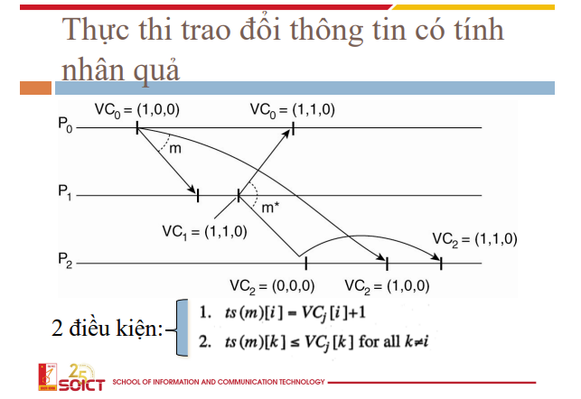

nhận xét nếu một hệ thống không cần quá chính xác về thời gian
chỉ cần chúng hoạt động đúng logic thì có thể xem xét các thuật toán sau
lamport sẽ giải quyết bài toán về vấn đề cycle (chu kì) của các clock trên các đồng hồ là khác nhau
hay tổng quát là lệch thời gian
có thể thấy với ảnh dưới thì rõ ràng thông điệp gửi đi ở node này lại được node kia nhận ở thời gian trước đó
(vô lý)

vậy để làm cái đồng hồ hết vô lý thì làm như thế nào, cùng xem thuật toán tự điều chỉnh đồng hồ của lamport xem sao
bằng cách cập nhật, tự điều chỉnh thời gian theo thông tin của gói tin nhận được, các node có thể đảm bảo đồng hồ của mình chạy phù hợp với node gửi


dựa vào ý tưởng đảm bảo thứ tự ở trên ta có thể triển khai advance hơn trên mạng phân tán
để đảm bảo thứ tự thực hiện như trên
bài toán ở trong hệ phân tán là ai sẽ là người được đi vào trước, trong khi ai cũng có thể đi vào
và nếu "dễ dãi" chấp nhận cả 2 thì khi đồng bộ sẽ có tranh chấp về dữ liệu
VD: con rút tiền, mẹ gửi tiền

bằng cách sử dụng một biến đếm số lượng các task đã thực thi nhằm chính xác thứ tự thực hiện
và chỉ thực hiện khi điều kiện đáp ứng
sau đó mỗi khi sự kiện này sảy ra sẽ thêm vào biến đếm từ đó khi được truyền đi bên nhận sẽ biết được thứ tự nên thực hiện
\

phía dưới là một ví dụ việc đảm bảo thứ tự, node nhận gói tin chỉ thực thi khi đáp ứng điều kiện bên gửi

EM CÓ CÂU HỎI